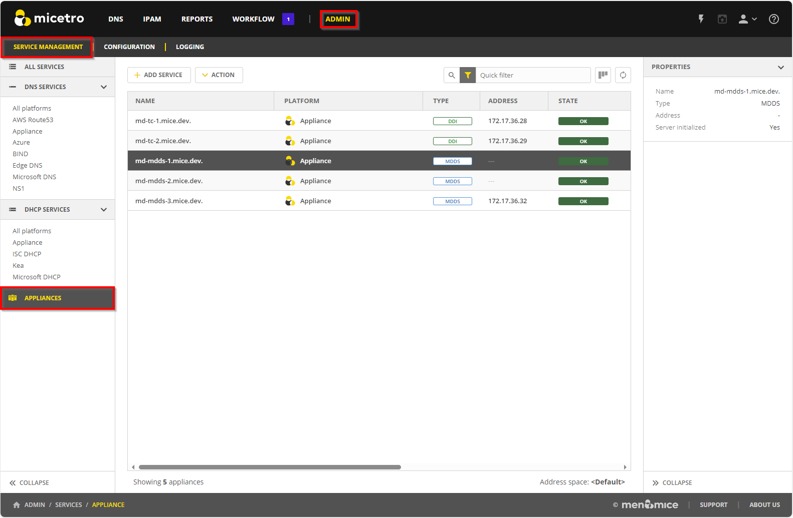
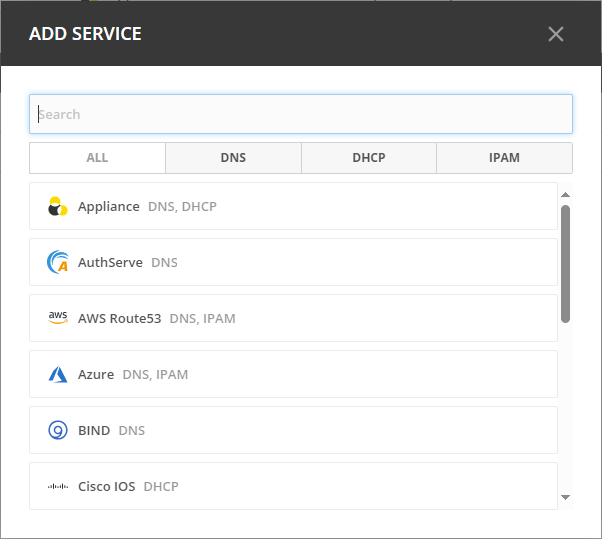
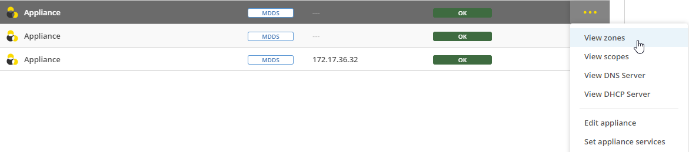
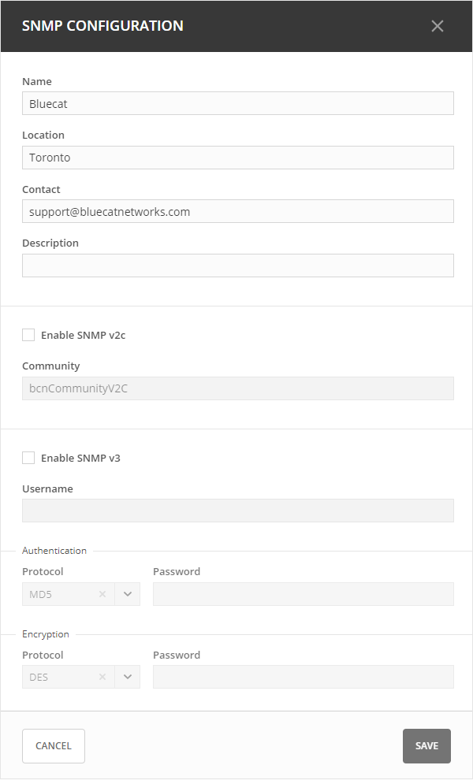
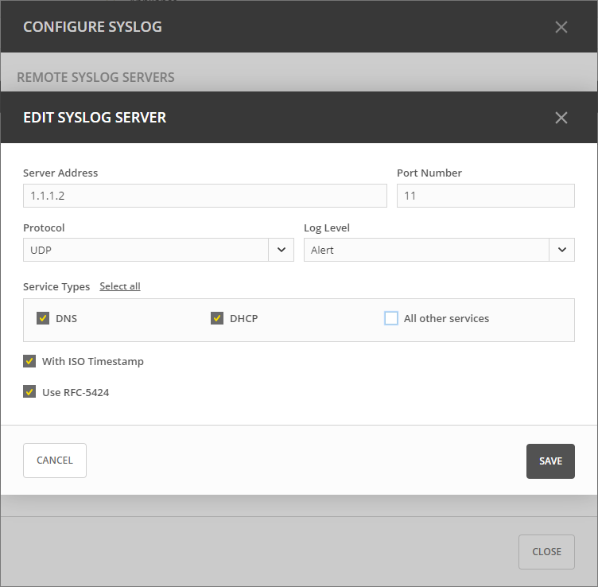
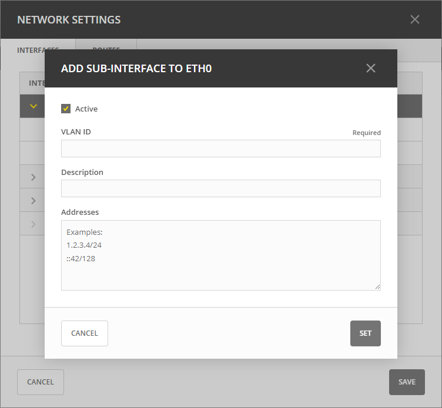
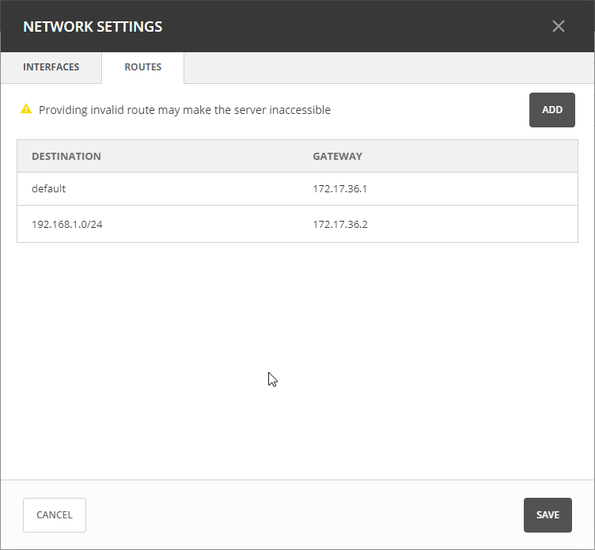
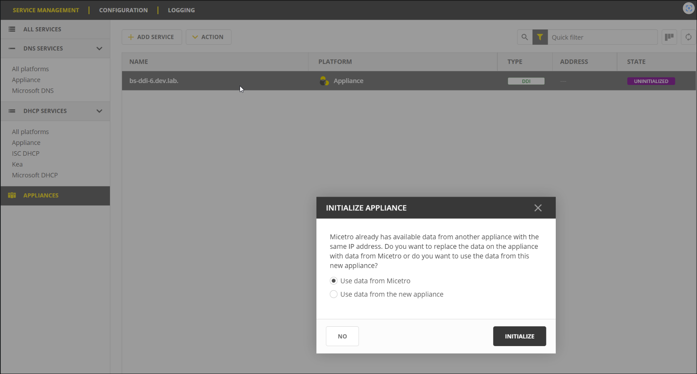

Integrating and Managing Appliances
Micetro seamlessly integrates with DNS/DHCP server (MDDS) appliances, available in both hardware and virtual machine configuration. By integrating Micetro with appliances, you gain the power to effectively manage services, optimize deployment processes, and oversee day-to-day server operations, all through the intuitive Micetro user interface.
Once you have configured the initial network settings for your appliance and added it to your Service Management, you can interact with the services just as you would with other DNS and DHCP services within Micetro.
Appliances are accessed and managed in Service Management on the Admin page.
{kind=link}
Adding a New Appliance to Micetro
Note
Before adding a MDDS appliance to Micetro, ensure that the appliance is configured in Micetro-mode and that interfaces are appropriately configured.
To configure the appliance to be in Micetro-mode, follow the instructions for Configuring DNS/DHCP Servers for Micetro.
To configure interfaces on the appliance, follow the instructions for Setting an IPv4 address and Setting an IPv6 address.
To add an appliance to Micetro, you must have the Administrator role.
To add an appliance:
Go to the Service Management tab on the Admin page, and select Add Service. The Add Service wizard opens.
Select Appliance.
Provide the host name for the appliance, which will also be used for the DNS and DHCP services hosted on the appliance.
Optionally, enter the IP address of the appliance. The appliance name will still be used when displaying appliance information.
Enable or disable appliance services. By default, DNS and DHCP services are activated. If you require remote access to your appliance for specific purposes, you can enable the SSH (Secure Shell) client.
Select Add. The appliance is added to the Appliances section, and its associated services are listed under DNS Services and DHCP Services.
{kind=link}
Editing Appliance Name
You can change the name or IP address used to connect to your appliance. This is useful if you need to refer to the appliance by another name or if you are connecting to the appliance by an IP address and the IP address has changed.
To change the appliance name:
Go to the Service Management tab on the Admin page.
In the filtering sidebar, select Appliances, then select the specific appliance you wish to edit.
Select Edit appliance on either the Action or the Row … menu.
Modify the appliance’s name, and/or IP address (optional).
Note
Changing the name or IP address here only affects how you connect to the appliance. It does not alter the actual IP address of the appliance itself.
Select Save when you are done.
Viewing Zones, Scopes, and Servers
You can easily navigate to zones, scopes, and DNS/DHCP servers associated with the appliance with just one click.
Locate the specific application, and select the relevant view option on either the Action or the Row … menu. This will direct you to the appropriate view for your selected application.
{kind=link}
Setting Appliance Services
You can enable or disable various appliance services to configure your appliance.
To enable/disable appliance services:
Locate the specific appliance for which you want to set services.
Select Set appliance services on either the Action or the Row … menu.
Enable or disable the desired services:
DNS: Enable this service to allow your appliance to participate in domain name resolution on the network.
DHCP: Enable this service if you want your appliance to manage dynamic IP address allocation on the network.
SSH (Secure Shell): The SSH service is not enabled by default. You can enable it when secure remote access is needed, such as for troubleshooting.
Firewall: The firewall is a crucial security measure that protects your appliance against potential attacks. It is strongly recommended to keep the firewall enabled at all times to safeguard your server from threats. Disabling the firewall is NOT recommended. Disabling the firewall temporarily should only be done in situations where you have a deep understanding of the potential risks and have specific security measures in place to compensate for the loss of protection. Even in such cases, minimize the duration of firewall disablement and re-enable it as soon as possible.
Select Save when you are done.
Configuring DNS Resolvers
To ensure optimal performance of your appliance, you can add the IP addresses of DNS resolver servers. This step helps your appliance efficiently resolve domain names and provide accurate network services.
To set DNS resolvers:
Locate the specific appliance for which you want to configure DNS resolvers. Ensure you select the correct appliance to avoid any disruptions in network services.
Select Configure DNS resolvers on either the Action or the Row … menu.
In the Configure DNS resolvers dialog box, enter the IP addresses of the DNS resolver servers you want to set. It’s important to ensure the accuracy of the IP addresses, as incorrect entries can lead to DNS resolution issues. You can set multiple DNS resolvers by listing their IP addresses on separate lines. This redundancy ensures uninterrupted DNS resolution even if one resolver becomes unavailable.
Select Save when you are done.
Configuring NTP on Appliances
Use the Network Time Protocol (NTP) service to maintain precise time synchronization across your network infrastructure. Accurate timekeeping ensures proper coordination of network events, security protocols, and compliance with reporting requirements.
To configure NTP:
Locate the specific appliance for which you wish to configure NTP.
Select Configure NTP on either the Action or the Row … menu.
Select the Enable NTP service checkbox to activate the NTP service on your appliance.
In the text box, enter the hostnames or IP addresses of the NTP servers from which you want to synchronize your appliance’s clock.
Tip
Consider using multiple NTP servers for redundancy and increased reliability, ensuring continued time synchronization even if one server becomes inaccessible.
Select Save when you are done.
Configuring SNMP Monitoring
You can use Simple Network Management Protocol (SNMP) monitoring to gather comprehensive information about the appliance. SNMP is enabled by default on appliances, allowing you to access monitoring information without any additional configuration.
Micetro supports SNMP versions v2c and v3. Version v2c is a Community-Based SNMP, which means that it relies on a community string (similar to a password) for authentication, making it relatively simple to set up. Version v3, on the other hand, is a User-Based SNMP and provides enhanced security and authentication mechanisms. It introduces the concept of SNMP users and offers features like user authentication and data encryption.
To configure SNMP Monitoring on appliances:
Locate the specific appliance for which you want to configure SNMP monitoring.
Select Configure SNMP on either the Action or the Row … menu.
The Configure SNMP dialog box opens with several options:
Name: You can enter the name that will be reported through SNMP. By default, this is set as Bluecat.
Location: Enter a description of the system’s physical location. By default, this is set as Toronto.
Contact: Enter the email address of the contact person responsible for the system. By default, this is set as the email address for BlueCat’s support.
Description: Enter a brief description of the system.
Enable SNMP v2c: Select this option to enable the SNMP v2c protocol.
Community: Enter the community string, which serves as a password for the SNMP v2c protocol.
Enable SNMP v3: Select this option to enable the SNMP v3 protocol.
Username: Enter the SNMP username for the SNMP user.
Authentication: Select either MD5 or SHA authentication and enter the user password for the SNMP user. If you select None, the SNMP service doesn’t require user authentication and doesn’t encrypt the data it returns.
Encryption: Select either DES or AES 128 encryption types, and provide the password used to encrypt the data. If you select None, the SNNMP service doesn’t encrypt the data it returns.
Select Save to save your settings and close the dialog box.
{kind=link}
Configuring Remote Logging Servers (Syslog)
You can define multiple remote logging servers on your appliance to meet diverse logging needs. Centralizing syslog management across a network offers a multitude of advantages. This approach involves storing logs in a central location, providing IT professionals with streamlined troubleshooting processes, enhanced security monitoring capabilities, and simplified compliance and auditing procedures. By consolidating logs, resource optimization is achieved, particularly beneficial for devices with limited storage capacity. Additionally, centralized syslog management facilitates proactive alerting and notification systems, allowing administrators to address potential issues before they escalate. Configuring a remote logging server involves specifying several key properties, allowing you to customize server addresses, communication ports, protocols, log levels, service types, timestamp formats, and more.
To configure Syslog:
Locate the specific appliance for which you want to configure Syslog.
Select Configure Syslog on either the Action or the Row … menu.
In the Configure Syslog dialog box, select Add Server to add a new logging server. Alternatively, modify the configuration of an existing server by selecting it and then Edit on the Row … menu.
Server Address: Assign an IP address to each remote logging server.
Port Number: Specify the communication port.
Protocol: Select the transport protocol that aligns with the requirements (TCP or UDP).
Log Level: Select the desired log level.
Service Types: Define service types to filter by.
With ISO Timestamp: Decide whether to use the ISO format for timestamps, with customization available for each remote server and locally on the appliance itself.
RFC-5424: Choose between using RFC-5424 (Syslog protocol) or defaulting to RFC-3164 (BDS syslog protocol) if not explicitly selected.
{kind=link}
To remove a remote syslog server:
In the Configure Syslog dialog box, select the server you wish to remove.
On the Row … menu, select Remove.
Configuring Network Settings
Using the network settings, you can configure the routing information for the appliance. You can also enable and configure sub-interfaces and edit loopback addresses.
Managing Application Interfaces
The Network Settings let you set up the interfaces on the appliance. You can create sub-interfaces, allowing you to logically divide a physical interface into multiple virtual interfaces, each with distinct IP addresses. This segmentation can be crucial for efficiently managing network traffic and facilitating communication between different VLANs. You can also modify the loopback address.
To manage application interfaces:
Locate the specific appliance for which you want to manage interfaces.
Select Network settings on either the Action or the Row … menu.
Click the Row … menu for the relevant interface and select to add, edit, or remove a sub-interface.
Add a sub-interface: Select Add sub-interface. In the Add Sub-Interface dialog box, provide the following details:
Active: By default, the interface is active. Clear the Active checkbox if you want to deactivate the sub-interface temporarily.
VLAN ID: Enter the appropriate VLAN ID.
Description: Optionally, enter a description for the sub-interface.
Addresses: Enter the IP addresses you want to assign with the sub-interface.
Edit an interface: Select Edit on the interface’s Row … menu. Deactivate the interface by clearing the Active checkbox if needed. Make any other necessary changes. Refer to the “Add a sub-interface” section for descriptions of the fields.
Remove a sub-interface: Click the Row … menu for the sub-interface to delete, and then select Remove.
Modify the loopback address: On the interface’s Row … menu, select Edit, and then make the desired changes.
{kind=link}
Configuring Static Routes
Tailor your appliance’s network connectivity by managing and customizing routes to reach specific networks. It’s crucial to enter valid route information, as invalid routes can render the server inaccessible.
It is not possible to edit the default route.
To add a route:
Locate the specific appliance for which you need to configure a route.
Select Network settings on either the Action or the Row … menu.
In the Network Settings dialog box, select the Routes tab.
Select the Add button, and enter the required information:
Destination: The network IP address of a destination network.
Gateway: The IP address leading to the remote network
Click Set to apply the configured route.
{kind=link}
For route modifications, select Edit or Remove on the Row … menu for the desired route.
Moving Appliances to a Different Address Space
DNS servers, DHCP servers, IP Address ranges, and individual IP Address entries can be moved between address spaces. When an object is moved between address spaces, all properties for the object are retained, including its access settings and change history. You must have the relevant administrator privileges to move objects to a different address space.
Downloading Support Information for Appliances
To help in troubleshooting, you may be asked to download support information for your appliance. This support information file holds crucial details about your appliance setup, aiding our support team in diagnosing and resolving any issues you may encounter.
To download support information:
Locate the specific appliance you are troubleshooting.
Select Get support info on either the Action or the Row … menu.
Select Download.
Once the download is complete, forward the downloaded file to support@bluecatnetworks.com.
Note
The support information file is packaged as a .tgz archive and contains various text files. If you wish to view the contents of the support information file, you can use any tool capable of extracting data from .tgz archives to access and review the enclosed text files.
Shutting Down or Restarting Appliances
You can shut down or restart the appliances.
Note
For appliances equipped with an Integrated Dell Remote Access Controller (iDRAC), the iDRAC continues running when the appliance is shut down. This means that it can be accessed via the local network to power on the appliance without requiring physical access. If you shut down an appliance that is not equipped with iDRAC, it will be turned off and you will need physical access to the appliance to turn it on again. Consult the specifications for your appliance for more information on its remote access capabilities.
To shut down or restart appliances:
Select the appliance you want to restart or shut down.
On the Action menu, select Shut down appliance or Restart appliance and select Yes in the confirmation dialog box. The appliance shuts down or restarts, depending on your selection.
Removing Appliances
This command is only available for the Administrator role.
Warning
When you remove an appliance from Micetro, the DNS and DHCP services hosted on the appliance are removed from Micetro as well.
To remove an appliance from Micetro:
Select the appliance(s) you want to remove. To select multiple appliances, hold down the Ctrl key while making your selection.
On the Action menu, select Remove appliance. Select Yes to confirm.
Viewing Appliance History
The View history option on the Action or the Row … menu opens the History window that shows a log of all changes that have been made to the appliance, including the date and time of the change, the name of the user who made it, the actions performed, and any comments entered by the user when saving changes to objects. For more information about how to view change history, see Viewing Object Change History.
Backup and Restore
Micetro automatically takes a backup of your appliance’s configuration every 15 minutes, capturing any changes made since the last backup. Additionally, a full backup is taken once every 24 hours, and all the incremental backups are managed and cleaned up for you.
When an appliance experiences a crash and becomes unusable, you can use these backups to set up a new appliance as a replacement, while maintaining the same IP address.
Micetro automatically detects the new server as uninitialized. To begin using the new server, you need to initialize it.
To initialize a server:
Locate the uninitialized server.
Select Initialize appliance on either the Action or the Row … menu.
Use data from Micetro: This option allows you to initialize the server using the data saved in Micetro.
Use data from the new appliance: Use this option if you want to initialize the server with the data from the new appliance itself.
{kind=link}
See also: